Oregon Trail Travel Guide
The Oregon Trail is a historic route that stretches over 2,000 miles from Missouri to Oregon. It was used by pioneers in the 19th century to migrate westward in search of new opportunities and land. Today, travelers can explore the trail's rich history, visit preserved landmarks, and experience the natural beauty of the American West.

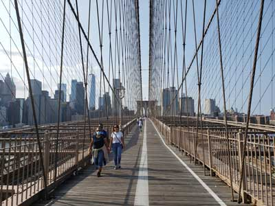
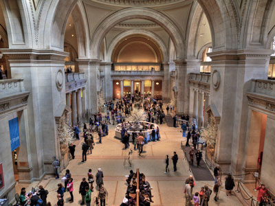
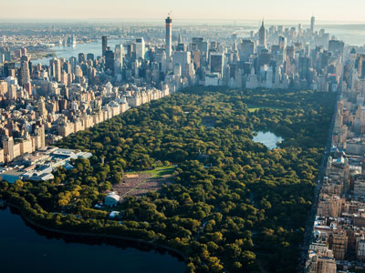
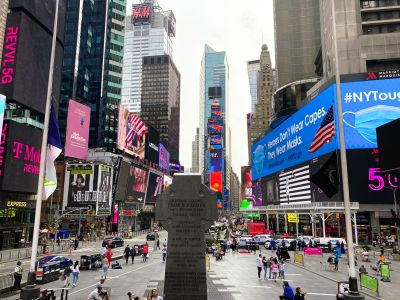
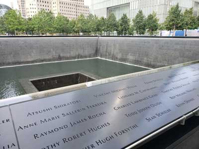
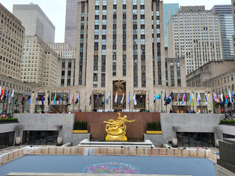
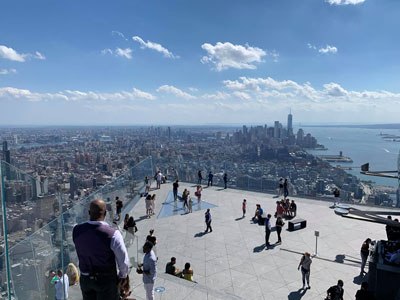
Places to See on the Oregon Trail
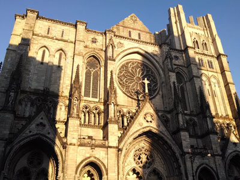
PortableNYCTours, CC BY-SA 4.0, via Wikimedia Commons; Image Size Adjusted
.jpg){kind=link}
National Frontier Trails Museum
Independence
Cathedral in the Morningside Heights neighborhood of Manhattan is the world's sixth-largest church by area
Anthony Quintano from Hillsborough, NJ, United States, CC BY 2.0, via Wikimedia Commons; Image Size Adjusted
.jpg){kind=link}
Fort Osage National Historic Landmark
Sibley
Most visited urban park in the United States, with an estimated 42 million visitors annually as of 2016, and is the most filmed location in the world
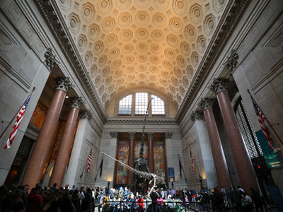
bryan..., CC BY-SA 2.0, via Wikimedia Commons; Image Size Adjusted
.jpg){kind=link}
St Joseph
St Joseph
Museum complex comprises 26 interconnected buildings housing 45 permanent exhibition halls, in addition to a planetarium and a library
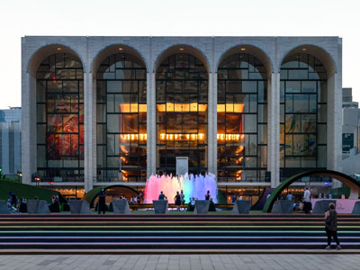
Rhododendrites, CC BY-SA 4.0, via Wikimedia Commons; Image Size Adjusted
.jpg){kind=link}
Alcove Spring Park
Blue Rapids
16.3-acre complex of buildings houses nationally and internationally renowned performing arts organizations including the New York Philharmonic, the Metropolitan Opera, and the New York City Ballet
.jpg){kind=link}
Hollenberg Pony Express Station State Historic Site
Hanover
Largest art museum in the United States. Its permanent collection contains over 2 million works, divided among 17 curatorial departments
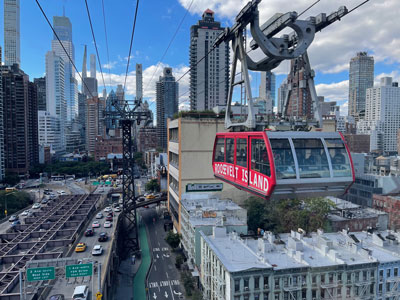
Jdforrester, CC BY 4.0, via Wikimedia Commons; Image Size Adjusted

Fort Larned National Historic Site
Larned
Aerial tramway in New York City that spans the East River and connects Roosevelt Island to the Upper East Side of Manhattan
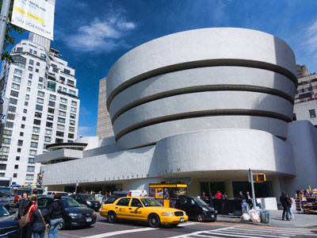
Jean-Christophe BENOIST, CC BY 3.0, via Wikimedia Commons; Image Size Adjusted

Fort Kearny State Historical Park
Kearney
Art museum that is home of a continuously expanding collection of Impressionist, Post-Impressionist, early Modern, and contemporary art
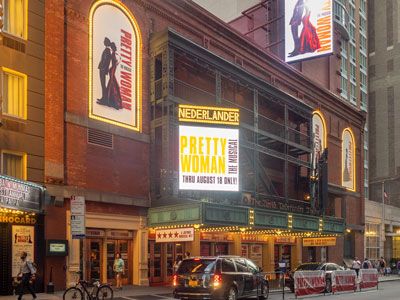
Ajay Suresh from New York, NY, USA, CC BY 2.0, via Wikimedia Commons; Image Size Adjusted
.jpg){kind=link}
Windlass Hill
Oshkosh
Theatrical performances which are presented in the 41 professional theatres, located in the Theater District and the Lincoln Center along Broadway
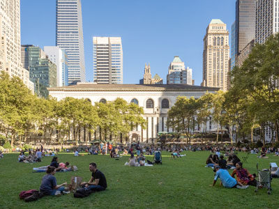
ajay_suresh, CC BY 2.0, via Wikimedia Commons; Image Size Adjusted
.jpg){kind=link}
Ash Hollow State Historical Park
Lewellen
9.6-acre (39,000 m2) public park in Midtown Manhattan where the eastern half is occupied by the Main Branch of the New York Public Library and the western half contains a lawn, and shaded walkways
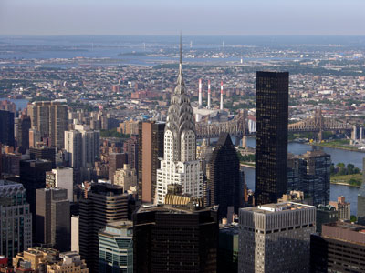
Misterweiss at English Wikipedia, Public domain, via Wikimedia Commons; Image Size Adjusted

Chimney Rock National Historic Site
Bayard
Art Deco skyscraper in the Turtle Bay neighborhood on the East Side of Manhattan is the tallest brick building in the world with a steel framework
Hypnotoad78, CC BY-SA 4.0, via Wikimedia Commons; Image Size Adjusted

Scotts Bluff National Monument
Gering
Outdoor terrace jutting 80 feet outward south, providing panoramic views of Manhattan and the Hudson River
Legacy of the Plains Museum
Gering
Commuter rail terminal in Midtown Manhattan known for its distinctive architecture and interior design that have earned it several landmark designations
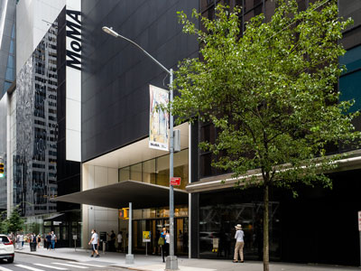
ajay_suresh, CC BY 2.0, via Wikimedia Commons; Image Size Adjusted
_(51395759113).jpg){kind=link}
Courthouse and Jail Rocks
Bridgeport
Art museum located in Midtown Manhattan is often identified as one of the largest and most influential museums of modern art in the world
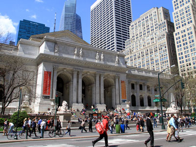
Ingfbruno, CC BY-SA 3.0, via Wikimedia Commons; Image Size Adjusted
.jpg){kind=link}
Fort Laramie National Historic Site
Fort Laramie
Flagship building in the New York Public Library system and a landmark in Midtown Manhattan
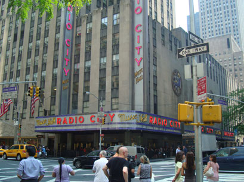
PumpkinSky, CC BY-SA 3.0, via Wikimedia Commons; Image Size Adjusted

Register Cliff State Historic Site
Guernsey
Art Deco styled entertainment venue within Rockefeller Center known for its large auditorium
Independence Rock State Historic Site
Alcova
Large complex consisting of 19 commercial buildings covering 22 acres (89,000 m2) between 48th Street and 51st Street in Midtown Manhattan
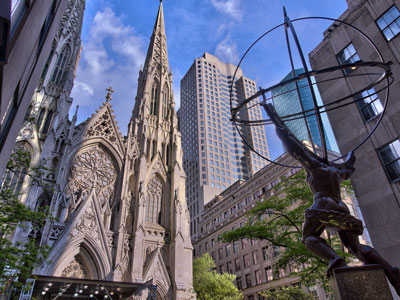
Jean-Christophe BENOIST, CC BY 3.0, via Wikimedia Commons; Image Size Adjusted

South Pass
South Pass City
Catholic cathedral in the Midtown Manhattan is the largest Gothic Revival Catholic cathedral in North America
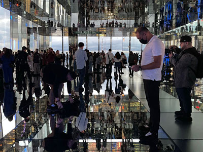
Saggittarius A, CC BY-SA 4.0, via Wikimedia Commons; Image Size Adjusted

Fort Bridger State Historic Site
Fort Bridger
Observation deck consisting of glass-floored elevators and enclosed glass balconies that protrude from the facade
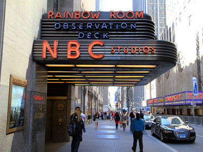
NBCUniversal, CC BY 3.0, via Wikimedia Commons; Image Size Adjusted
Massacre Rocks State Park
American Falls
Centerpiece of Rockefeller Center houses the headquarters and New York studios of television network NBC; the Rainbow Room restaurant; and Top of the Rock observation deck
Soda Springs
Soda Springs
Major commercial intersection, tourist destination, entertainment center, brightly lit by numerous billboards and advertisements, is one of the world's busiest pedestrian areas, and the hub of the Broadway Theater District
Basil D Soufi, CC BY-SA 3.0, via Wikimedia Commons; Image Size Adjusted
.jpg){kind=link}
Geyser Park
Soda Springs
Complex that has served as the official headquarters of the United Nations since 1951 and holds the seats of the principal organs of the UN
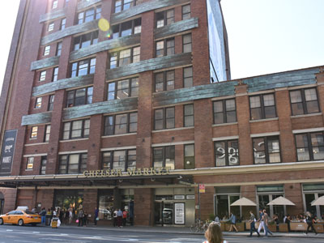
MusikAnimal, CC BY-SA 4.0, via Wikimedia Commons; Image Size Adjusted

Bannock County Historical Complex
Pocatello
Food hall, shopping mall, office building and television production facility located in the Chelsea neighborhood of Manhattan
National Oregon California Trail Center
Montpelier
Neighborhood in Lower Manhattan is the home to the highest concentration of Chinese people in the Western Hemisphere and is one of the oldest Chinese ethnic enclaves
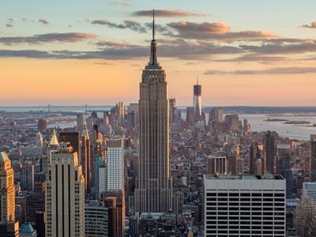
Sam valadi, CC BY 2.0, via Wikimedia Commons; Image Size Adjusted

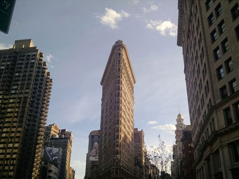
PortableNYCTours, CC BY-SA 4.0, via Wikimedia Commons; Image Size Adjusted
.jpg){kind=link}
Hagerman Fossil Beds National Monument
Hagerman
Triangular 22-story, 285-foot-tall (86.9 m) steel-framed landmarked building located in the eponymous Flatiron District neighborhood of Manhattan
National Historic Oregon Trail Interpretive Center
Baker City
Neighborhood on the west side of Lower Manhattan known as an artists' haven, bohemian capital, cradle of the modern LGBT movement, and the East Coast birthplace the Beat and '60s counterculture movements
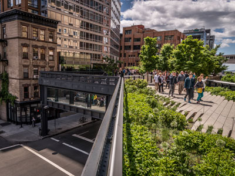
Jeff P from Berkeley, CA, USA, CC BY 2.0, via Wikimedia Commons; Image Size Adjusted
.jpg){kind=link}
Mount Hood Scenic Byway
Mount Hood
Small, fenced-in private park and the surrounding neighborhood that is referred to also as Gramercy, in Manhattan
Matias Garabedian from Montreal, Canada, CC BY-SA 2.0, via Wikimedia Commons; Image Size Adjusted
.jpg){kind=link}
Philip Foster Farm Historic Site
Eagle Creek
1.45-mile-long (2.33 km) elevated linear park, greenway and rail trail created on a former New York Central Railroad spur on the west side of Manhattan
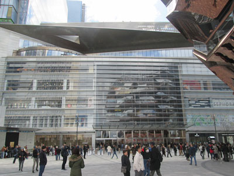
Epicgenius, CC BY-SA 4.0, via Wikimedia Commons; Image Size Adjusted

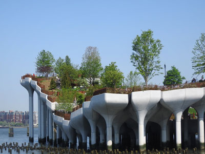
Jim.henderson, CC BY 4.0, via Wikimedia Commons; Image Size Adjusted
_jeh.jpg){kind=link}
Whitman Mission National Historic Site
Walla Walla
Artificial island park in the Hudson River west of Manhattan is supported by 132 pot-shaped structures suspended above the water
Overview
The Oregon Trail was the principal overland route used by hundreds of thousands of emigrants traveling westward during the 19th century. Stretching more than 2,000 miles from Missouri to Oregon's Willamette Valley, the trail carried settlers, farmers, merchants, missionaries, and adventurers seeking new opportunities in the American West. The route followed rivers, crossed vast prairies, traversed the Rocky Mountains, and passed through several key landmarks that became symbols of the westward migration experience.
While individual travelers often took alternate routes and cutoffs, the locations below represent the most commonly established path followed by emigrants heading to Oregon. These sites preserve the history of wagon travel, frontier forts, natural landmarks, and communities that supported westbound pioneers during their journey.
Missouri: Jumping-Off Points to the West
- National Frontier Trails Museum (Independence) - Independence served as one of the primary departure points for travelers heading west on the Oregon, California, and Santa Fe Trails.
- Fort Osage National Historic Landmark - Established as an important frontier outpost, Fort Osage reflects conditions along the western edge of American settlement before emigrants entered the Great Plains.
- St. Joseph - Another major jumping-off point where many wagon trains assembled and made final preparations before beginning the journey west.
Kansas: Entering the Great Plains
- Alcove Spring Park - A popular campsite offering fresh water and shelter. Many emigrants rested here during the early weeks of travel.
- Hollenberg Pony Express Station State Historic Site - Located near a section of trail heavily used by emigrants traveling across northern Kansas.
- Fort Larned National Historic Site - One of the most important military posts protecting travelers along western migration routes and facilitating trade on the plains.
Nebraska: Following the Platte River
The Platte River corridor formed the backbone of the Oregon Trail. Its broad valley provided a relatively gentle route across the Great Plains and became one of the most heavily traveled migration corridors in American history.
- Fort Kearny State Historical Park - Established as a key military and supply post for travelers crossing Nebraska Territory.
- Legacy of the Plains Museum - Interprets pioneer life and the agricultural development that followed western migration.
- Ash Hollow State Historical Park - One of the trail's most significant camping and resupply locations, known for water, grass, and shelter along the route.
- Windlass Hill - A steep descent where wagon trains used ropes and braking systems to safely lower wagons into Ash Hollow.
- Courthouse and Jail Rocks - Distinctive rock formations that served as important navigation landmarks visible from great distances.
- Chimney Rock National Historic Site - Perhaps the most famous landmark on the Oregon Trail, frequently mentioned in emigrant diaries as a symbol of progress westward.
- Scotts Bluff National Monument - One of the final major landmarks before travelers left the Platte River Valley and continued toward Wyoming.
Wyoming: Crossing the Rockies
Wyoming contained some of the most important milestones on the Oregon Trail, including military forts, famous landmarks, and the crucial crossing of the Continental Divide.
- Fort Laramie National Historic Site - The most significant military and trading post along the trail, serving as a major resupply and communication center.
- Register Cliff State Historic Site - Travelers frequently carved their names into the soft rock face, leaving a lasting record of their journey.
- Independence Rock State Historic Site - Known as the "Great Register of the Desert," emigrants often stopped to leave inscriptions and gauge their travel progress.
- South Pass - The broad, relatively gentle crossing of the Continental Divide that made large-scale western migration possible.
- Fort Bridger State Historic Site - A critical trading post where travelers could resupply and decide among several western route options.
Idaho: Following the Snake River
After crossing South Pass, emigrants entered present-day Idaho and followed the Snake River across volcanic plains, river crossings, and desert landscapes.
- Soda Springs - A well-known stop featuring naturally carbonated springs that amazed many trail travelers.
- National Oregon California Trail Center - Preserves and interprets the experiences of emigrants traveling through southeastern Idaho.
- Bannock County Historical Complex - Highlights the regional history associated with pioneer migration and settlement.
- Massacre Rocks State Park - Named for dramatic volcanic rock formations that created one of the more challenging segments of the trail.
- Three Island Crossing State Park - One of the most important crossings of the Snake River and a major milestone for emigrants.
- Geyser Park - Home to natural geothermal features that have attracted visitors for generations.
- Hagerman Fossil Beds National Monument - Located near portions of the trail corridor and preserves evidence of prehistoric life in the Snake River Valley.
Washington: Missionaries and Frontier Settlement
- Whitman Mission National Historic Site - Commemorates the mission established by Marcus and Narcissa Whitman and an important chapter in Oregon Trail history.
Oregon: Reaching the Destination
After months of travel, emigrants entered Oregon Territory and made their final approach toward the fertile Willamette Valley, the primary destination for many Oregon Trail settlers.
- National Historic Oregon Trail Interpretive Center (Baker City) - Interprets emigrant experiences as they crossed northeastern Oregon.
- Mount Hood Scenic Byway - Follows part of the route pioneers used while traveling around the iconic mountain toward the Willamette Valley.
- Philip Foster Farm Historic Site - Important resupply and assistance point for weary travelers nearing the end of their journey.
- End of the Oregon Trail Museum (Oregon City) - Commemorates Oregon City, widely recognized as the traditional end of the Oregon Trail.
Route Summary
Independence → Fort Osage → St. Joseph → Alcove Spring → Hollenberg Station → Fort Larned → Fort Kearny → Ash Hollow → Windlass Hill → Courthouse and Jail Rocks → Chimney Rock → Scotts Bluff → Fort Laramie → Register Cliff → Independence Rock → South Pass → Fort Bridger → Soda Springs → Massacre Rocks → Three Island Crossing → Whitman Mission → Baker City → Mount Hood → Philip Foster Farm → Oregon City.
Historical Significance
From the 1840s through the 1860s, the Oregon Trail served as one of the most important migration routes in United States history. The trail helped facilitate settlement of the Pacific Northwest and transformed the American West. Today, preserved landmarks, museums, forts, and historic sites along the route allow visitors to follow the path taken by generations of pioneers who crossed the continent in search of new opportunities.
This article uses material from National Park Service resources, state historic sites, and official Oregon National Historic Trail interpretive organizations that document the history of the Oregon Trail and the westward migration of American settlers.
This article uses material from the Wikipedia article "Route 66", which is released under the Creative Commons Attribution-Share-Alike License 3.0
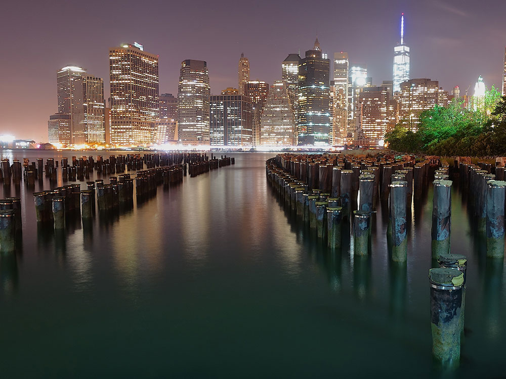
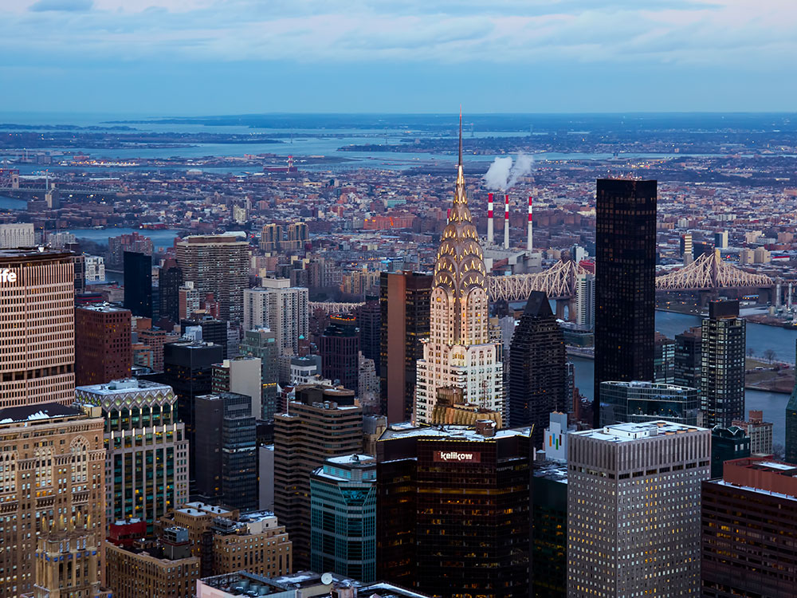